How much of the genetic variation separates the populations? Which pairs differ? Do the regions you defined really group the populations? Block 5 computes the classical and modern estimators of differentiation (FST, GST, G′ST and Jost’s D), the analysis of molecular variance (AMOVA) with or without regions, the pairwise matrices with their tests, and an indicative conversion to number of migrants.
When populations exchange few migrants, drift changes their allele frequencies in different directions and they gradually drift apart. Differentiation measures how far apart they have moved: it compares the diversity of each population with that of the whole set.
If the populations were a single one, the diversity within them (HS) would equal that of the whole set (HT). The more their frequencies differ, the more diversity “appears” when they are pooled: FST = (HT − HS)/HT is the fraction of the total diversity due to differences among populations. It is 0 if all of them have the same frequencies and 1 if each is fixed for a different allele. This is the same reasoning as the Wahlund effect in chapter 4.
GST has a ceiling: it can never exceed 1 − HS, so with highly diverse markers such as microsatellites it stays close to zero even when the populations do not share a single allele (figure 6.2). Hedrick (2005) proposed G′ST, which divides GST by its maximum possible value, and Jost (2008) proposed D, which directly measures how different the sets of alleles are. None of them replaces the others: they measure related but different things (Meirmans and Hedrick, 2011).
| Statistic | Formula | What it measures and when to use it | Range |
|---|---|---|---|
| θ · FST Weir and Cockerham (1984) | σ²among / σ²total, with variance components summed over alleles and loci | Differentiation as the correlation between alleles from the same population. Corrects for sample size and number of samples. The estimator to report, and the one related to gene flow and drift. | ≈ 0 to 1 |
| θB dominant bands | θ for haploid units applied to band presence or absence | The same idea with AFLP, ISSR or RAPD. Equal to ΦPT from AMOVA. | ≈ 0 to 1 |
| GST Nei (1973) | (HT − HS) / HT | Fraction of the total diversity found among populations. Useful for comparison with older studies; limited by the ceiling 1 − HS. | 0 to 1 − HS |
| G′ST Hedrick (2005) | GST (r − 1 + HS) / [(r − 1)(1 − HS)] | GST divided by its maximum possible value: comparable across markers with different diversity. | 0 to 1 |
| D Jost (2008) | r/(r − 1) · (HT − HS) / (1 − HS) | How different the sets of alleles are: 0 if identical, 1 if they share none. Says nothing about migration. | 0 to 1 |
| ΦST · ΦPT AMOVA | σ²among populations / σ²total | Differentiation from AMOVA; ΦPT with bands. Without regions, equal to θ or θB (section 6.2). | ≈ 0 to 1 |
| Nm Wright | (1 − θ) / (4θ); (1 − θ) / (2θ) for haplotypes | Migrants per generation that would produce that θ under the island model. An order of magnitude only (section 6.3). | 0 to ∞ |
The multilocus θ is a ratio of sums: the variance components of all loci are summed first and then divided, so the more informative loci carry more weight. GST, G′ST and D are computed from HS and HT averaged over loci, so the three are comparable with one another. Some studies instead average the per-locus D values, using the arithmetic or the harmonic mean; the app shows both in the note below the per-locus table so that you can compare like with like. The 95% intervals are obtained by resampling loci (bootstrap) and the standard errors by jackknife over loci.
The analysis of molecular variance (AMOVA; Excoffier, Smouse and Quattro, 1992) partitions the squared genetic distances among the levels of the sampling design, just as an analysis of variance partitions the sum of squares among treatments and replicates. Each level yields a variance component and a Φ statistic, which is the fraction of the variation explained by that level.
| Source of variation | d.f. | Φ statistic | Test: what is permuted |
|---|---|---|---|
| Among regions | G − 1 | ΦCT = σ²a / σ² | Whole populations among regions. |
| Among populations within regions | P − G | ΦSC = σ²b / (σ²b + σ²c + σ²d) | Individuals among the populations of the same region. |
| Among populations (no regions) | P − 1 | ΦST (ΦPT with bands) | Individuals among all populations. |
| Among individuals within populations | N − P | ΦIS = σ²c / (σ²c + σ²d) | Gene copies among individuals of the same population. |
| Within individuals | N | ΦIT = (σ²a + σ²b + σ²c) / σ² | — |
A variance component can come out negative when a level contributes no variation and sampling chance pushes the estimate below zero. This is not a computational error: it is interpreted as zero. The app keeps it in the table, so that the sum adds up, and draws it as zero in the figure.
In the agave exercise (section 6.6) the design is balanced: 2 regions, 2 populations per region, 20 plants per population and no missing data. The mean squares are 45.60 among regions, 38.65 among populations within regions and 10.653 within populations. Each mean square contains the components of the levels below it, multiplied by the number of plants in each unit:
| Component | Calculation | Result |
|---|---|---|
| σ²c within populations | MS within | 10.653 |
| σ²b populations within regions | (38.65 − 10.653) / 20 | 1.400 |
| σ²a regions | (45.60 − 10.653 − 20 × 1.400) / 40 | 0.174 |
| ΦCT · ΦSC · ΦPT | σ²a/σ² · σ²b/(σ²b + σ²c) · (σ²a + σ²b)/σ², with σ² = 12.226 | 0.014 · 0.116 · 0.129 |
With unbalanced designs the multipliers (20 and 40) are replaced by the coefficients n, n′ and n″ of Excoffier et al. (1992), and with missing data the app computes them locus by locus.
The test of ΦCT permutes whole populations among regions. With few populations there are few distinct ways to assign them, and the P value can never drop below 1 divided by that number of ways, however many permutations you request. The app computes that number and warns you about it (table 6.3). With fewer than about 8 populations, judge the regional level by the size of its component, not by its P.
| Design | 4 pops. in 2 + 2 | 4 in 3 + 1 | 6 in 3 + 3 | 8 in 4 + 4 | 10 in 5 + 5 | 12 in 4 + 4 + 4 |
|---|---|---|---|---|---|---|
| Distinct ways | 3 | 4 | 10 | 35 | 126 | 5775 |
| Minimum P | 0.33 | 0.25 | 0.10 | 0.029 | 0.008 | 0.0002 |
Global differentiation tells you how much the populations differ as a whole; pairwise matrices tell you which ones differ. For each pair the app computes θ, the AMOVA Φ, GST, G′ST, D and Nm, and tests θ and Φ by permuting the individuals of the two populations. Since there are as many tests as pairs, the P values are corrected with Holm’s method (chapter 5).
If many populations of equal size exchange migrants at random, at the same rate, for long enough to reach equilibrium between drift and migration, then FST ≈ 1/(1 + 4Nem) for nuclear genes of a diploid organism, with codominant or dominant markers. Rearranging gives Nem ≈ (1 − FST)/(4FST). For uniparentally inherited haploid genomes, such as the chloroplast, FST ≈ 1/(1 + 2Nem). The classical rule says that with more than one migrant per generation, drift cannot differentiate the populations much. Chapter 2 shows this relationship with the simulator.
| FST | 0.01 | 0.05 | 0.10 | 0.15 | 0.20 | 0.25 | 0.33 | 0.50 |
|---|---|---|---|---|---|---|---|---|
| Nm, diploid nuclear genes | 24.8 | 4.75 | 2.25 | 1.42 | 1.00 | 0.75 | 0.51 | 0.25 |
| Nm, haplotypes | 49.5 | 9.50 | 4.50 | 2.83 | 2.00 | 1.50 | 1.02 | 0.50 |
No real population meets the island model: sizes differ, migration is higher between neighbours, differentiation may stem from ancient isolation rather than from low present-day migration, and equilibrium takes many generations to be reached. Nm therefore serves to say “several migrants per generation” or “fewer than one”, not to give an exact number of seeds or pollen grains (Whitlock and McCauley, 1999). The app labels it indicative. For the geographical pattern of differentiation, use the isolation-by-distance analysis of Block 6.
| FST or θ | Differentiation | Interpretation |
|---|---|---|
| Below 0.05 | Low | The populations share almost all their frequencies; abundant gene flow or recent separation. |
| 0.05 to 0.15 | Moderate | Clear but shallow structure. Common in outcrossing plants with nuclear markers. |
| 0.15 to 0.25 | High | Well-differentiated populations; little exchange or a separate history. |
| Above 0.25 | Very high | Common in selfing species, isolated populations and chloroplast markers. |
Wright’s (1978) scale. It was designed for FST with markers that have few alleles: with microsatellites, whose HS is high, a θ of 0.05 can conceal quite different populations (figure 6.2), so read it together with G′ST or D.
| If your question is… | report… |
|---|---|
| How much structure there is and how it relates to drift and migration | θ (FST) with its interval, and ΦST or ΦPT from AMOVA with its P. |
| How different the allele pools are, for example for conservation | Jost’s D or G′ST, in addition to θ. |
| Comparison with another study or another marker | G′ST or D, which do not depend on the HS ceiling, and the same kind of locus average used in the other study. |
| Comparison with an older study that only gave GST | GST as a reference, noting its ceiling. |
The general recommendation is not to report a single estimator: θ plus D or G′ST covers both interpretations (Meirmans and Hedrick, 2011).
| If… | then… |
|---|---|
| ΦCT is significant and the region component is larger than the population component | The grouping into regions is real and captures most of the structure. |
| ΦCT and ΦSC are significant, with populations weighing more | The regions differ, but within each one the populations differ even more. |
| ΦSC is significant and ΦCT is not | The populations differ, but they do not group according to the regions you defined. Try a grouping suggested by the data (Block 7). |
| Few populations (table 6.3) | The test of ΦCT cannot reach significance: read the size of the component. |
| None is significant | At this scale, the species behaves almost as a single large population. |
| If… | then… |
|---|---|
| The corrected P of a pair is below 0.05 | The two populations differ in frequencies; treat them as distinct units. |
| Nm is above 4 | Gene flow is sufficient to keep them similar. |
| Nm is between 1 and 4 | Moderate exchange; drift leaves a mark but does not separate them completely. |
| Nm is below 1 | Drift dominates and the populations diverge; conserving each one is a priority. |
| All corrected P values are equal and small | This is the minimum possible with those permutations (with 199 and 3 pairs, 0.005 × 3 = 0.015). Increase the permutations to tell them apart. |
The Nm thresholds are indicative and inherit all the limitations of the island model.
Block 5 opens when there are at least two populations with two or more individuals each and molecular markers; it does not apply to morphological traits or to landraces with a single sample. On entry, everything is computed with the default settings; if you change any of them, press Compute differentiation.
| Setting | Options | Recommendation |
|---|---|---|
| Permutations (global θ and AMOVA) | 0 to 99,999 (default 999). | 999; 9999 for the paper. |
| Permutations per population pair | 0 to 9999 (default 199). | 199 for exploration; 999 if there are few pairs. |
| Bootstrap replicates over loci | 0 to 10,000 (default 1000). | 1000. Requires three or more loci. |
| Hierarchical AMOVA (regions › populations) | On by default. Appears if Block 2 has two or more regions. | Turn it off to see the single-level AMOVA. |
| Leave out the loci flagged for null alleles in Block 4 | Appears if Block 4 flagged any locus. | Run with and without the flagged loci and compare. |
| Random seed | An integer. | Report it in the methods. |
The app takes the regions from a column of your data. The column is recognised automatically if its name starts with Region, Zone, Group, State, Estado, Area, Cluster, Subregion, Watershed, Province, País or Country; otherwise, assign it the Region / group role in Block 2. Each population must belong to a single region. In FASTA files, the region can go in the sequence name, as in ID|population|region, or in a sample sheet.
| Card | Content | Download |
|---|---|---|
| 2 · What the numbers say | Key figures and interpretation: level of differentiation, GST ceiling, regions, inbreeding and pairs. | — |
| 3 · Analysis of molecular variance | AMOVA table with degrees of freedom, sums of squares, components, percentages, Φ and P, and the figure of the partition. | — |
| 4 · Global F-statistics, locus by locus | HO, HS, HT, GST, G′ST, D, θ, f and F per locus, the multilocus value with its interval, and the per-locus figure. | Per-locus statistics (CSV) |
| 5 · Pairwise differentiation | Matrix of the statistic chosen in Statistic below the diagonal and corrected P values above it; heat map and comparison of estimators by pair. | All pairs, all statistics (CSV) |
| Figure in the app | What it shows |
|---|---|
| AMOVA: where the molecular variance sits | Bar with the percentage of each level and its Φ values with P. |
| Differentiation locus by locus | θ, GST, G′ST or D for each locus, with the multilocus value and its shaded interval. A locus well above the interval is highlighted in another colour. |
| Pairwise differentiation | Heat map of the pairwise statistic, with the corrected P values in the upper half. |
| Four estimators, pair by pair | GST, G′ST, D and θ side by side for each pair, sorted by D. |
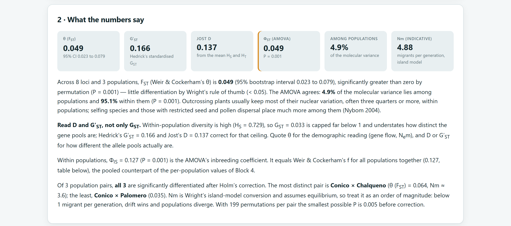
| Estimator | Value | 95% CI (bootstrap) | SE (jackknife) | Interpretation |
|---|---|---|---|---|
| θ (FST) | 0.049 | 0.023 to 0.079 | 0.016 | Low to moderate; P = 0.001. |
| GST | 0.033 | 0.016 to 0.054 | 0.011 | Limited by HS = 0.729. |
| G′ST | 0.166 | 0.082 to 0.262 | 0.051 | Five times GST once the ceiling is corrected. |
| Jost’s D | 0.137 | 0.067 to 0.218 | 0.043 | The allele pools differ considerably more than θ suggests. |
| f (FIS) · F (FIT) | 0.127 · 0.169 | 0.083 to 0.169 · 0.136 to 0.204 | 0.024 · 0.019 | Overall inbreeding, equal to ΦIS from AMOVA. |
| Nm | 4.9 | — | — | Several migrants per generation. |
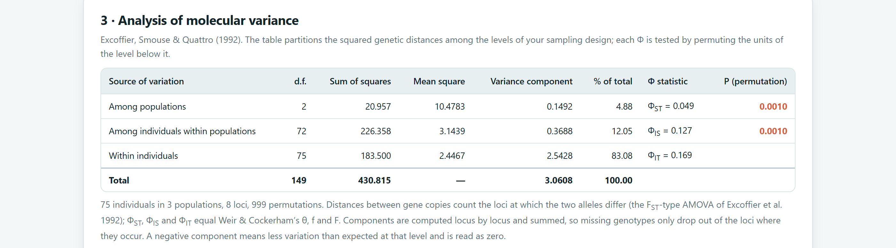
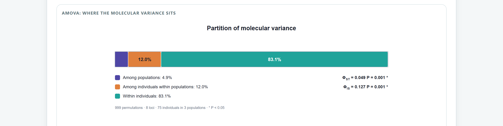
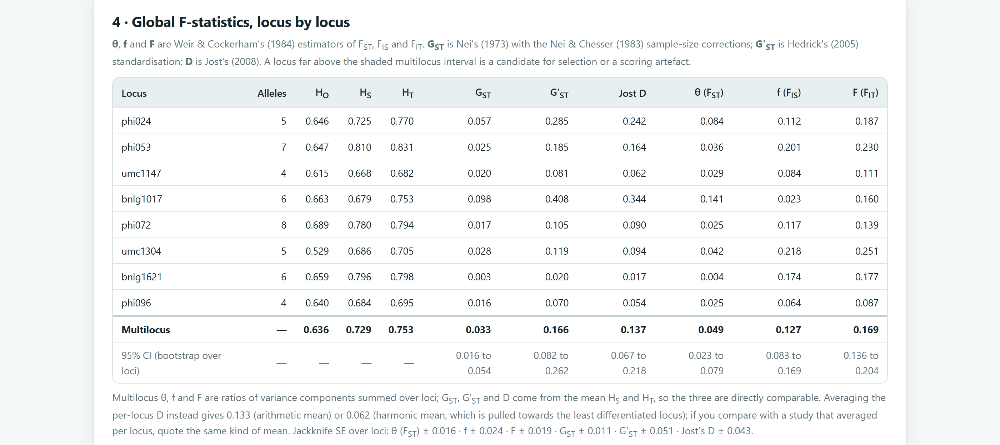
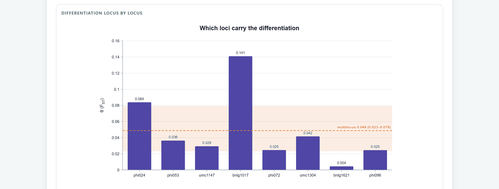
A locus with FST far above the rest may be linked to a gene under selection, but it may also reflect null alleles, scoring errors or plain chance: with 8 loci, one always ends up at an extreme. In this simulated example, bnlg1017 is not under selection. Claiming selection requires tens or hundreds of loci and dedicated outlier tests; here it is enough to check its gels and confirm that the conclusions do not change when it is excluded.
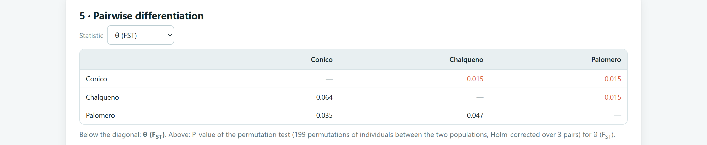
| Pair | θ | GST | G′ST | D | Nm | P (Holm) |
|---|---|---|---|---|---|---|
| Cónico × Chalqueño | 0.064 | 0.033 | 0.202 | 0.175 | 3.6 | 0.015 |
| Chalqueño × Palomero | 0.047 | 0.024 | 0.152 | 0.131 | 5.0 | 0.015 |
| Cónico × Palomero | 0.035 | 0.018 | 0.119 | 0.103 | 7.0 | 0.015 |
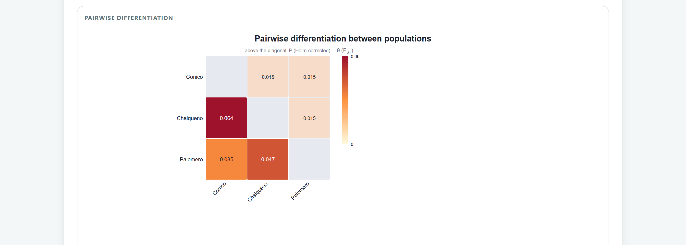
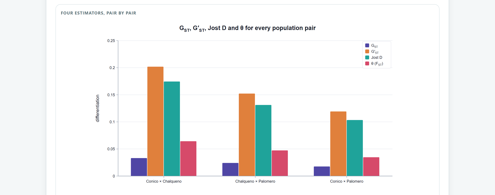
None of the bundled examples includes regions, but they are easy to add to the agave example with the built-in data sheet. The plants are sorted by population: rows 2 to 41 are the two Oaxaca populations and rows 42 to 81 are Puebla and Guerrero.
Population) and press + right: an empty column C is inserted.Region in C1 and Oaxaca in C2. Copy C2 with Ctrl+C, select C2 to C41 (click C2 and Shift+click C41) and paste with Ctrl+V: a value pasted over a range fills the whole range.Puebla-Guerrero from C42 to C81.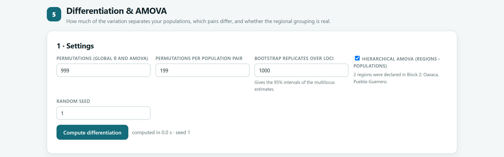
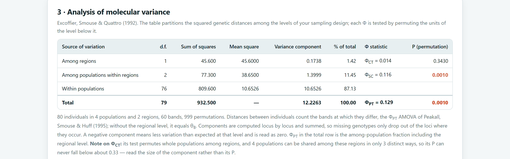
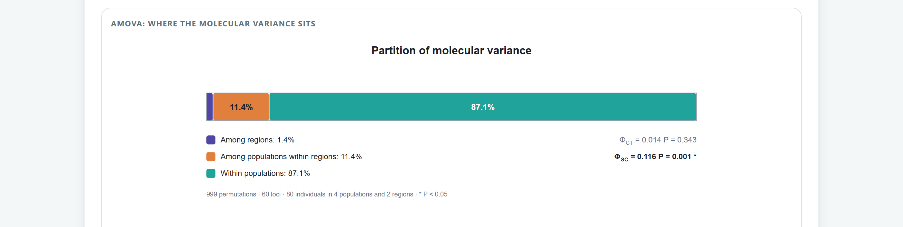
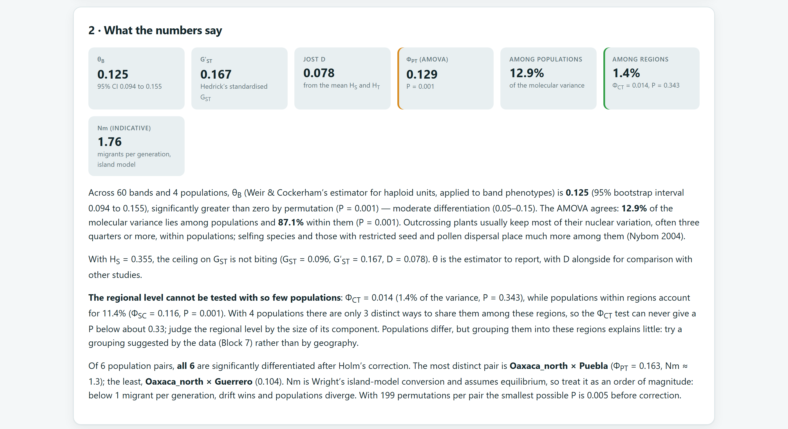
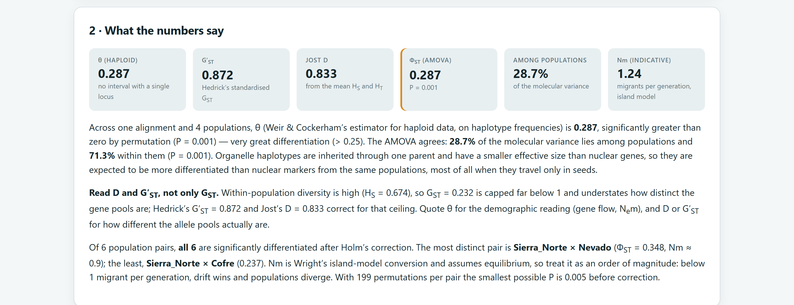
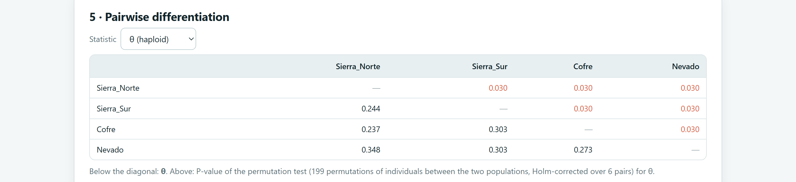
| Pair | θ | D | Nm (haploid) | Haplotypes in common |
|---|---|---|---|---|
| Sierra Norte × Nevado | 0.348 | 1 | 0.9 | None |
| Sierra Sur × Cofre | 0.303 | 1 | 1.2 | None |
| Sierra Sur × Nevado | 0.303 | 1 | 1.2 | None |
| Cofre × Nevado | 0.273 | 0.804 | 1.3 | H5 |
| Sierra Norte × Sierra Sur | 0.244 | 0.646 | 1.5 | H2 and H3 |
| Sierra Norte × Cofre | 0.237 | 0.582 | 1.6 | H1 |
Three pairs share no haplotype at all, so their pools are completely different and D = 1. θ does not reach 1 because each population retains three haplotypes: two sequences from the same population are often different too, and θ measures the difference between populations relative to the difference within them. This is the ceiling of figure 6.2 with real data. For the chloroplast, which is inherited through a single parent and has a smaller effective size than nuclear genes, higher differentiation is expected than with microsatellites from the same populations.
The complete AMOVA table (d.f., sums of squares, components, percentages, Φ and P, with the number of permutations); θ or θB with its interval, together with D or G′ST; the pairwise matrix with corrected P values, stating the correction method; and, if you use it, Nm as an indicative value. With regions, state how many populations there are per region and how many distinct ways of assigning them exist. The Per-locus statistics (CSV) and All pairs, all statistics (CSV) downloads contain all values to five decimal places.
For this manual, θ, f, F, HS, HT, GST, G′ST and D were recomputed with independent code for the maize data, by locus, overall and by pair, and for the agave data with the haploid version and with an analysis of variance on the bands: the differences do not exceed 10−12. The AMOVA sums of squares were compared with the direct sum of all distances between gene copies or between plants, and the hierarchical AMOVA of the agave with the formulas for the balanced design. The coefficients for unbalanced designs were checked by simulating 300 datasets with known components: the mean estimates were 0.0143, 0.0064 and 0.229 against true values of 0.0144, 0.0064 and 0.229. Under the null hypothesis, with populations shuffled at random, the θ test gave P ≤ 0.05 in 3 of 60 datasets, as expected by chance.
The next chapter moves from how much the populations differ to how they are related: Block 6 computes genetic distances, places populations and individuals in a PCoA ordination, builds trees with bootstrap support and tests isolation by distance.